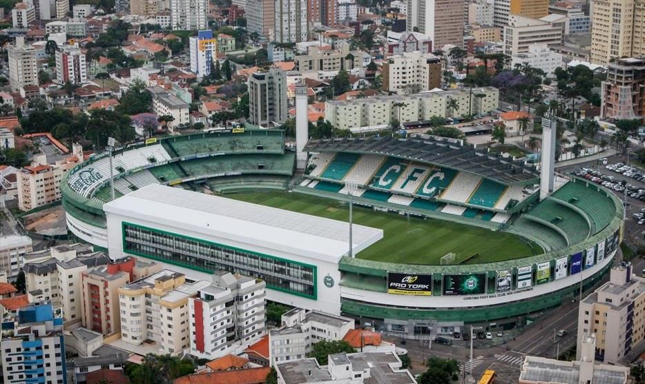

O Coritiba Foot Ball Club, mais conhecido como Coritiba, é um clube desportivo brasileiro da cidade de Curitiba. Fundado em 12 de outubro de 1909 por descendentes de alemães, é um dos clubes mais populares do Paraná e tradicionais do Sul do Brasil, sendo o mais antigo do estado, e entre os clubes campeões brasileiros, o terceiro mais antigo da região. Além de ser o clube com mais títulos do Paraná.
O Estádio Major Antônio Couto Pereira, conhecido simplesmente como Couto Pereira, é um estádio de futebol brasileiro, de propriedade do Coritiba Foot Ball Club. Está localizado no bairro Alto da Glória, em Curitiba, capital do estado do Paraná. Os torcedores o chamam carinhosamente de "Couto" ou "Alto da Glória". Foi inaugurado em 15 de novembro de 1932, com uma partida de futebol entre o Coritiba e o America-RJ, quando o time da casa venceu por 4 a 2.
